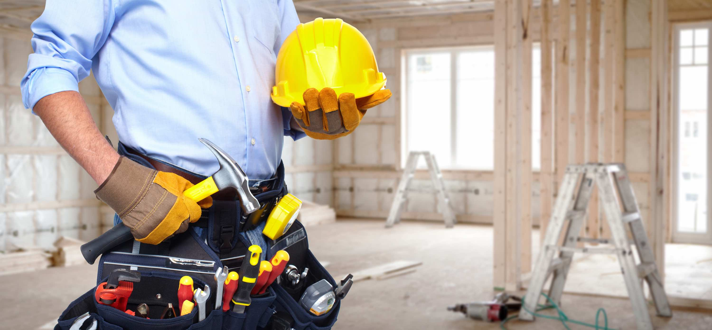

Pod kluch remont — bu ta'mirlash ishlarini to'liq boshqarish va bajarish
jarayonidir, bunda mijoz faqat natijani oladi, qolgan barcha jarayonlar
(loyiha, materiallar tanlovi, ishchi kuchi va boshqalar) ta'mirlash
kompaniyasi yoki mutaxassisi tomonidan amalga oshiriladi. Bu usul
ko'plab afzalliklarga ega: ### Afzalliklari: 1. **Qulaylik**: Mijozga
ta'mirlash jarayonini kuzatish va boshqarish zarurati yo'q. Barcha
ishlar mutaxassislar tomonidan amalga oshiriladi. 2. **Vaqtni tejash**:
Remont jarayoni tezroq va samaraliroq bajariladi, chunki barcha ishlar
bir joyda amalga oshiriladi. 3. **Kafolat**: Ko'p hollarda, pod kluch
xizmatlari taqdim etuvchi kompaniyalar ishlariga kafolat berishadi. 4.
**Bajon etish**: Mijoz o'zining istaklari va ehtiyojlariga muvofiq
tayyor natijani oladi. ### Jarayon: 1. **Tadqiqot va rejalashtirish**:
Mutaxassislar mijoz bilan uchrashib, ta'mirlash maqsadlarini
aniqlaydilar. 2. **Loyihalash**: Ta'mirlanadigan joy uchun loyiha
tayyorlanadi. 3. **Materiallar tanlovi**: Mavjud materiallar va
uskunalar tanlanadi va xarid qilinadi. 4. **Ishlarni bajarish**:
Ta'mirlash ishlari mutaxassislar tomonidan amalga oshiriladi. 5.
**Nazorat va tasdiqlash**: Mijoz ish jarayonini nazorat qiladi va
yakuniy natijani tasdiqlaydi. ### Qanday qilib tanlash kerak? -
**Reytinglar va sharhlar**: Ta'mirlash kompaniyalari haqida mijozlarning
fikrlarini o'rganish. - **Takliflar**: Bir nechta kompaniyadan takliflar
olish va ularni solishtirish. - **Kafolatlar**: Ish sifatiga kafolat
beradigan kompaniyalarni tanlash. Pod kluch remont — bu ta'mirlash
jarayonini soddalashtirish va mijozga qulaylik yaratish uchun yaxshi
usuldir. Agar qo'shimcha savollar yoki ma'lumot kerak bo'lsa, bemalol
so'rang!